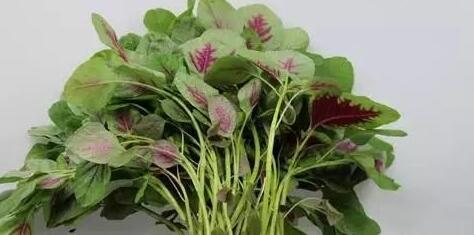

苋菜的功效与作用，苋菜的做法功效与作用及禁忌
苋菜有“长寿菜”之称，平时在菜市场见到的有绿苋菜和红苋菜两种，一般在夏天，我们见的比较多是红苋菜，苋菜在营养师眼里是个大宝贝~对于小孩子的生长发育，和补钙都有很重要的意义~根据2017年中国食物营养成分表所示，红苋菜和绿苋菜的营养成分差异不大，都含有丰富的营养元素哈~

常吃苋菜，帮助儿童健康成长
苋菜含有丰富的各种营养素如蛋白质、碳水化合物、膳食纤维、钙、维生素C等有助于儿童健康成长的营养元素，能提供多样化的营养摄入，有利于儿童的生长发育。
贫血、骨折、孕妇等特殊人群可以常吃苋菜
苋菜相比其他蔬菜而言，含钙比较丰富(187mg/100g)，但草酸含量也比较高(菠菜的草酸含量是0.97%，苋菜1.09%，韭菜1.48%，马齿苋1.31%，为了不摄入过多草酸，这些蔬菜还是用沸水焯一下，去掉涩味再吃比较好)，所含钙、铁进入人体后很容易被吸收利用。同时，苋菜中丰富含的铁、钙和维生素K，铁可以合成红细胞中的血红蛋白，可以促进凝血，增加血红蛋白含量并提高携氧能力，促进造血等功能，建议缺铁性贫血患者、骨折患者和临产的孕妇可以适当增加苋菜的摄入量。
夏季常吃苋菜对身体健康非常有益!下面一起来了解一下，夏季常吃苋菜都有哪些好处?
1，清火祛湿热
苋菜性凉，入肺，大肠经，有清热，利尿，解毒，凉血的功效，夏季常吃苋菜可以清除体内热气，增加尿量排出湿热，凉血散瘀，对湿热所致的肝火旺，目赤痛，咽喉肿痛有一定辅助疗效。
2，补充身体所需的钙质
苋菜中的钙含量极为丰富，而且苋菜不含草酸，经常食用苋菜可以有效补充人体所需的钙质，促进骨骼和牙齿的生长。苋菜口感软滑，甘香鲜美，特别适合一家老少食用。
3，预防贫血
红苋菜中铁含量比菠菜还高好几倍，而且还富含维生素C，同时可以促进肠道对铁的吸收。经常食用，可以增加体内血红蛋白的合成，预防贫血。
4，提高免疫力
苋菜中富含蛋白质，脂肪，维生素，胡萝卜素，钙，铁等营养，可以为人体提供丰富的营养物质，促进机体运作和新陈代谢，有利于提高机体免疫力。
5，减肥瘦身，排毒养颜
苋菜富含膳食纤维，可以促进胃肠消化和蠕动，及时排出肠道垃圾。这里面的垃圾包括缩便，部分脂肪，毒素，从而降低体内脂肪含量，起到一定减肥瘦身，排毒养颜的功效。同时，苋菜富含铁，有补血，增加皮肤红润度，而且富含维生素C，也可以让皮肤更光滑，嫩白。
6，预防癌症
苋菜含有硒，相信大家都知硒是防癌抗癌的重要抗氧化物质。
 上一篇
上一篇